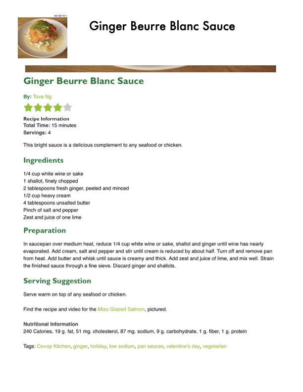

Ginger Beurre Blanc Sauce

Original cookbook page 563
Ingredients
- 1/4 cup white wine or sake
- 1 shallot, finely chopped
- 2 tablespoons fresh ginger, peeled and minced
- 1/2 cup heavy cream
- 4 tablespoons unsalted butter
- Pinch of salt and pepper
- Zest and juice of one lime
- Preparation
- In saucepan over medium heat, reduce 1/4 cup white wine or sake, shallot and ginger u
- evaporated. Add cream, salt and pepper and stir until cream is reduced by about half. Ti
- from heat. Add butter and whisk until sauce is creamy and thick. Add zest and juice of li
- the finished sauce through a fine sieve. Discard ginger and shallots.
- Serve warm on top of any seafood or chicken.
- Find the recipe and video for the Mizo Glazed Salmon, pictured.
- Nutritional Information
- 240 Calories, 19 g. fat, 51 mg. cholesterol, 87 mg. sodium, 9 g. carbohydrate, 1 g. fiber,
- Tags: Co+op Kitchen, ginger, holiday, low sodium, pan sauces, valentine's day, vegetari
Instructions
- Serve warm on top of any seafood or chicken.
Recipe #563 from collection